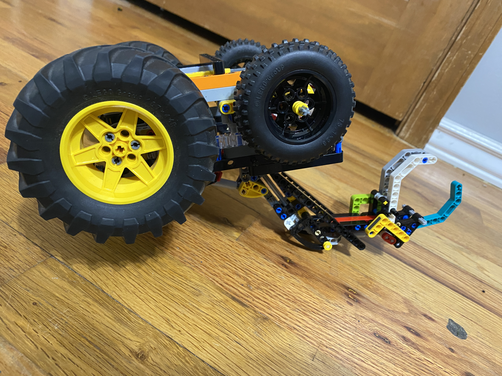
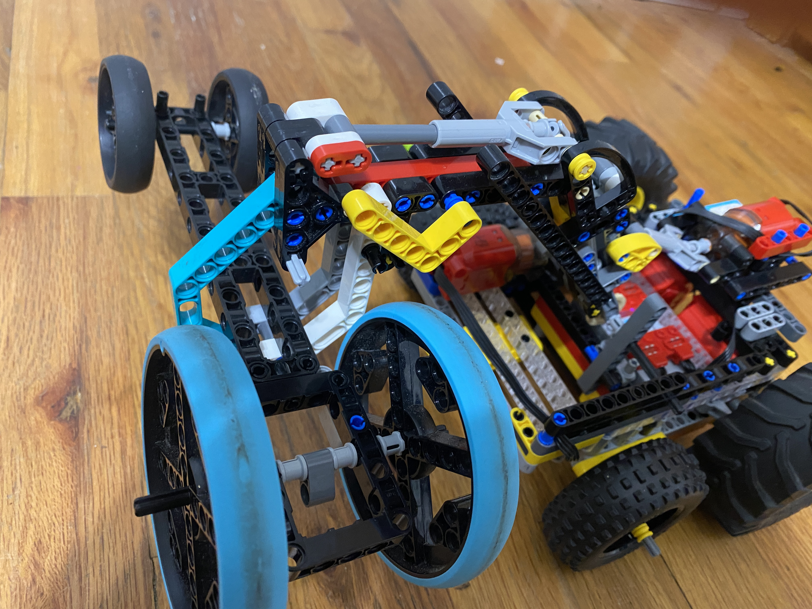
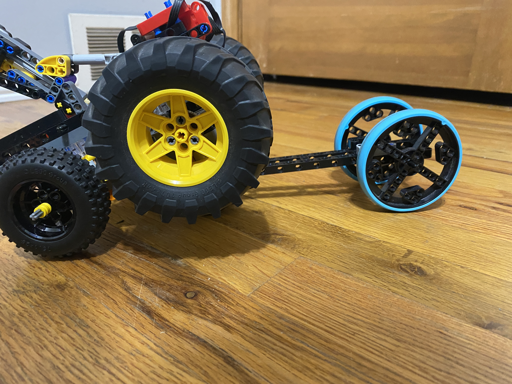
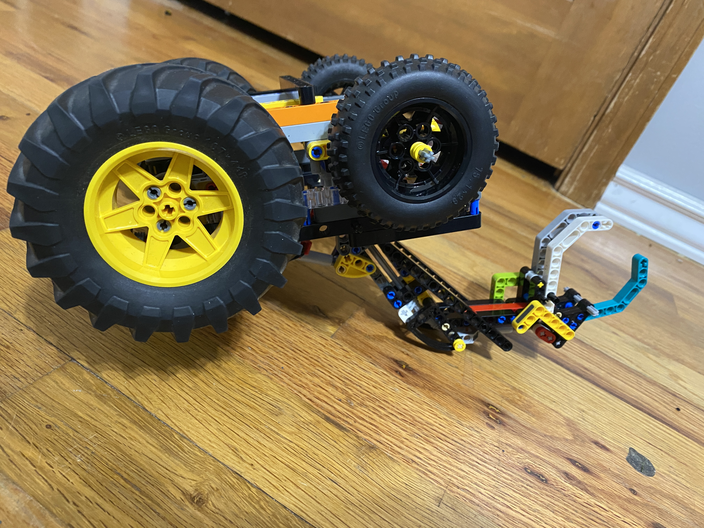
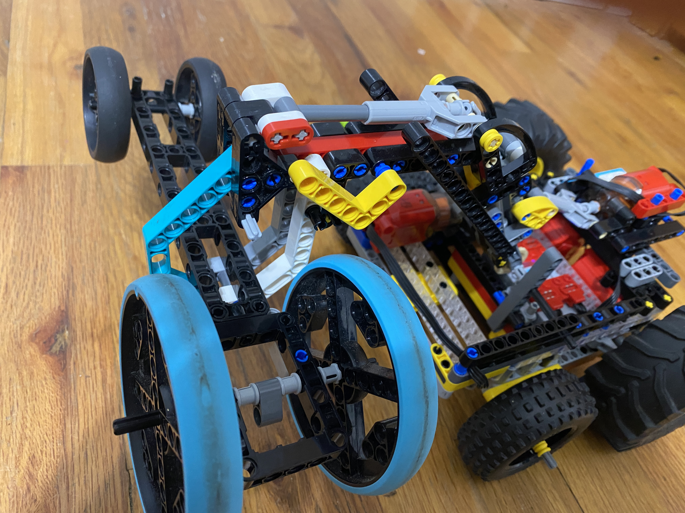
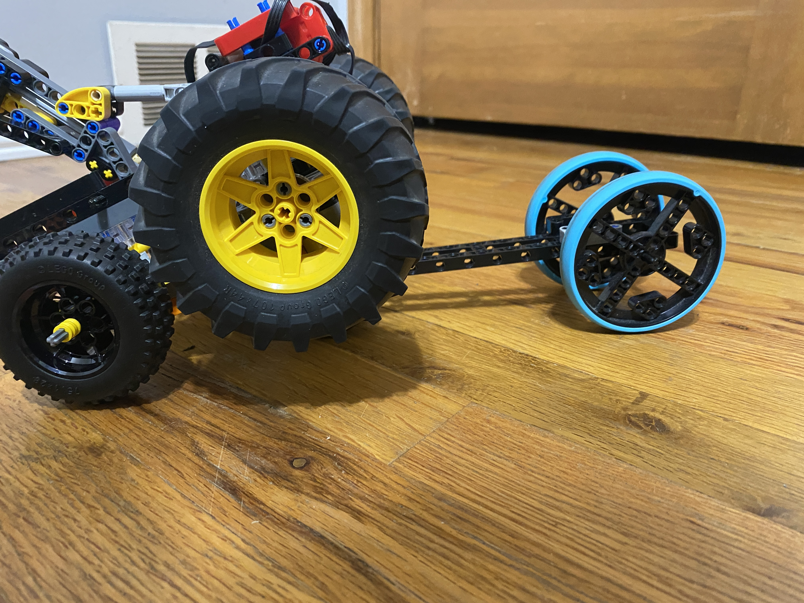

  
The Grabber is designed to grab other battle-bots drive axle with its claw and drive the helpless battle bot out of the ring.
  
The Grabber is designed to grab other battle-bots drive axle with its claw and drive the helpless battle bot out of the ring.
As you can probably see from the pictures above it does have some weaknesses such as being fliped so it can't move, and also
Being driven under so that its back weels can't touch the ground. Of these the issue of being fliped over I believe can be fixed,
By adding a extension on the arm of the claw so that when I lift the claw up when upside down it will turn me right side up.